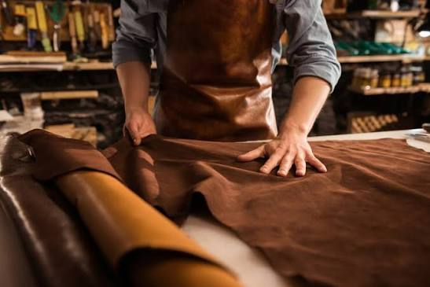
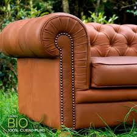

Cinco generacionesde tradición en cuero
Materias primas de cuero para la industria del cuero, el colágeno y la gelatina, exportadas a Europa, Asia y África.
Explorar productosNuestros productos
Suministramos materias primas de cuero en distintos estados de proceso, desde la piel salada hasta el cuero terminado, adaptándonos a las necesidades y volúmenes de cada cliente.

Quiénes somos
Curtidos de Colombia Group S.A.S. (CDC) es una empresa familiar colombiana ubicada en Villapinzón, Cundinamarca, con cinco generaciones de tradición en la industria del cuero.
Nuestra historia se remonta a la década de los 80. En 2010 incursionamos en la exportación y hoy llevamos nuestros productos a Europa, Asia y África. También suministramos materias primas a la industria alimentaria dedicada a la producción de colágeno y gelatina.
- 0
- Generaciones de tradición
- 0
- Continentes: Europa, Asia y África
- 0
- Líneas de producto
El proceso por el cual pasa cada piel
- 1
Ribera
Remojo, descarnado y depilado de la piel cruda.
- 2
Curtido
Estabilización de la piel con cromo o taninos vegetales.
- 3
Recurtido y teñido
Define el color, el cuerpo y la suavidad del cuero.
- 4
Acabado
Secado, prensado y acabado final de la flor.
¿Por qué elegir CDC?
Nos destacamos por nuestra experiencia, tradición familiar y compromiso con la calidad.
Contamos con cinco generaciones dedicadas al tratamiento del cuero, transmitiendo de generación en generación los conocimientos y técnicas que hacen parte de nuestra identidad.
Nuestros principales diferenciadores son:
- Cinco generaciones de tradición y experiencia en el tratamiento del cuero
- Excelente calidad de nuestros productos
- Experiencia en exportaciones internacionales
- Aliados estratégicos en diferentes partes del mundo
- Cumplimiento de certificaciones
- Atención personalizada
- Capacidad de adaptarnos a las necesidades y volúmenes requeridos por cada cliente
Misión
En Curtidos de Colombia Group S.A.S. (CDC), nuestra misión es ofrecer productos derivados del cuero de excelente calidad, combinando cinco generaciones de tradición familiar con experiencia y compromiso.
Trabajamos para satisfacer las necesidades de nuestros clientes nacionales e internacionales, ofreciendo soluciones personalizadas, cumpliendo con los estándares y certificaciones requeridos y construyendo relaciones comerciales basadas en la confianza, la calidad y la responsabilidad.
Visión
Ser reconocidos internacionalmente como una empresa destacada en la industria del cuero y sus materias primas, sobresaliendo por nuestra tradición familiar, excelencia en calidad y compromiso con nuestros clientes.
Buscamos expandir nuestra presencia en los mercados internacionales, fortalecer nuestras alianzas estratégicas y continuar transmitiendo nuestro conocimiento de generación en generación, combinando nuestra herencia con una visión moderna y global.
Certificaciones
CDC cuenta con certificación TCG para la exportación de materias primas destinadas a la producción de colágeno, y con las certificaciones necesarias para exportar materias primas de aplicación alimentaria hacia Europa y otros mercados internacionales.
Sectores a los que servimos
- Fabricantes de colágeno y gelatina
- Curtiembres
- Fabricantes de artículos de cuero
- Empresas importadoras
- Distribuidores internacionales

Sostenibilidad y responsabilidad ambiental
En CDC entendemos la importancia de desarrollar nuestra actividad industrial con responsabilidad y visión de futuro.
Como empresa con cinco generaciones de tradición en la industria del cuero, buscamos mantener un equilibrio entre nuestra experiencia, la calidad de nuestros productos y el compromiso con el entorno.
Trabajamos con una visión orientada a la mejora continua de nuestros procesos, promoviendo el uso responsable de los recursos y el desarrollo de relaciones comerciales sostenibles con nuestros clientes y aliados estratégicos.
Nuestro objetivo es continuar evolucionando como empresa, adaptándonos a las exigencias de los mercados internacionales y a las crecientes expectativas de responsabilidad ambiental en la industria.
Contáctanos
Correo electrónico
General: curtidosdecolombia@hotmail.com
Ventas y cotizaciones: martin.curtidoscolombia@gmail.com
Gerente general: Orlando Fernández Rozo · Gerente de ventas: Martín Fernández Rodríguez